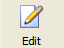

The Google App Engine Launcher can launch a text editor for editing a project's files.
To edit a project's files:
Select the project in the project list.
Click the Edit button.

Or: Select the menu option Edit > Open in External Editor...
Or: Press Control-E.
The project's application root directory is opened using a text editor.
To open the project's root directory in Windows Explorer:
Select the project in the project list.
Select the menu option Edit > Open in Explorer...
Or: Press Control-Shift-E.
The project's root directory opens in Windows Explorer.